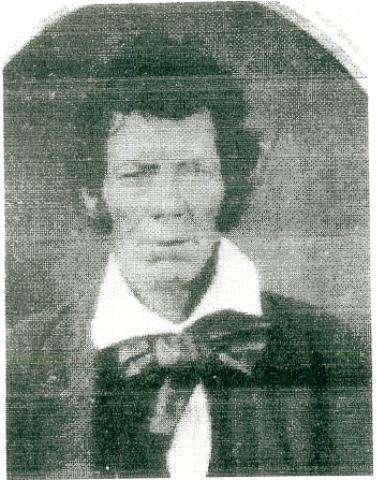
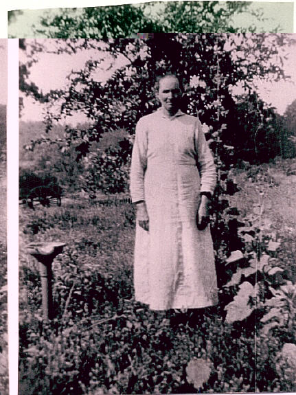
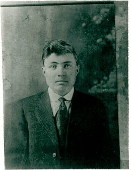
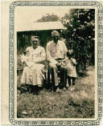

Menu
We are dedicating the photo page to our Native American ancestors, for the long hard battle they fought to achieve equality and dignity. If they could only speak!
James Tapp, son of Vincent and Molly Jett Tapp was born October 5, 1764 in Virginia and died in 1860. He married Sally Chewning Jan 5, 1794 in Virginia, Sally was born November 1773 and died 1834.
James moved with his Father and Mother, Vincent and Molly to Spartanburg South Carolina, however they returned to Culpeper County about 1790. Vincent died in early 1791. Afterwards several of their children returned to South Carolina, James remained in Virginia. There is indication that Molly returned to South Carolina with her children. James is the third great grandson of King William Taptico. (Courtsey of Charlie Tapp, Tucson AZ.)
1. Martha Ann Tapp (below) was born December 1874 in Van Buren County Arkansas and died July 24, 1947 at Leachville Arkansas. Martha married Jacob L. Byrd, September 1889 in Cleburne County Arkansas. Martha is the fifth Great Grand daughter of King William Taptico. Martha's Father, William Tapp served in the war of 1812 while living in South Carolina. (Courtsey of Al Byrd, Sierra Vista, Arizona)

2. Perry Tapp, (below) son of John Wiley Tapp, died 1913 in France during WW1.Our Indian Heritage is apparent in Perry's features. Perry's father, John Wiley Tapp is the the fifth great grandson of William Taptico ll. (Courtsey of Al Byrd , Sierra Vista, Arizona.)

3. John Wiley and Fannie (McCowan) Tapp; (below) John Wiley is the 5th great grandson of William Taptico II and Father of Perry Tapp. John Wiley was born May 15, 1870 and died December 24, 1938 in Winthrop Arkansas.
